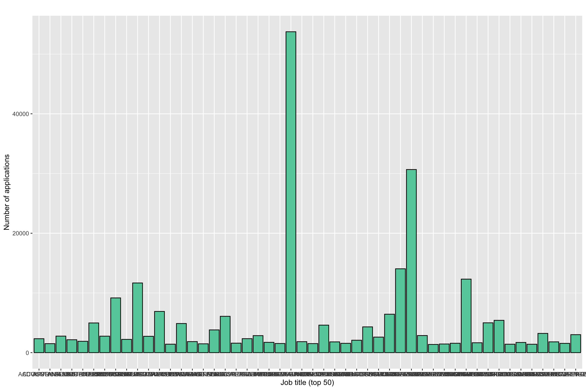
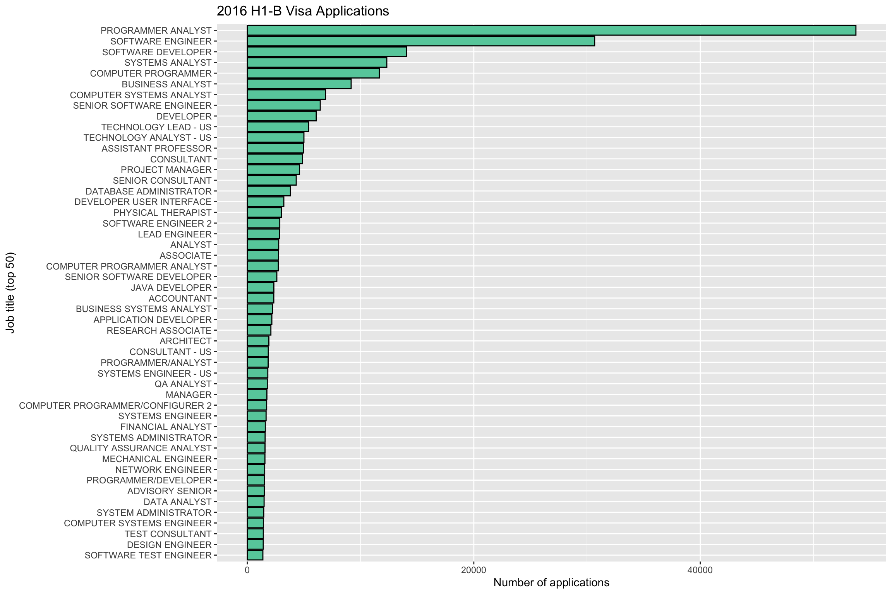

8 US Work Visas - Part 1

In this tutorial, we’ll be exploring the H1-B Visa. The H-1B is a visa in the United States which allows U.S. employers to employ foreign workers in specialty occupations. We’ll examine what kind of foreign workers are most often employed.
Goals of this tutorial
- Introduce the
forloop andpaste0 - Use R to load in big data
- Practice using
dplyrandtibbleon the visa dataset - Investigate H1-B visa trends
Datasets used
h1bvisa_part1.csvh1bvisa_part2.csvh1bvisa_part3.csvh1bvisa_part4.csvh1bvisa_part5.csvh1bvisa_part6.csvh1bvisa_part7.csv
8.1 The For Loop - Quick Introduction
For loops & conditional statements are a key skill in programming. They allow you to process through large datasets or multiple datasets thus minimizing the amount of manual work you need to do. The basic for loop looks like this…
# Generate sequence of numbers from 1 to 10 using the seq() function (seq for sequence)
numbersList = seq(from=1,to=10,by=1)
# Multiply each number in the numbersList by 8 and print the result
for (i in numbersList){
temNumber = i * 8
print(temNumber)
}## [1] 8
## [1] 16
## [1] 24
## [1] 32
## [1] 40
## [1] 48
## [1] 56
## [1] 64
## [1] 72
## [1] 80Notice the general structure of R for loops. ‘for’ signals to R you’re beginning a for loop, which requires the general structure to look like:
for (numbers/values to loop through){
condition for the looping using the numbers/values above
}
Yes, you must have these parentheses and curly brackets present and surrounding the appropriate code. If you forget a parentheses or curly bracket you’ll have errors pop up…this happens to me all the time still.
While these must be present, R doesn’t care where they are in your code (****which is very unique amongst programming languages). For example, notice how this ugly code is different but still runs…
# Generate sequence of numbers from 1 to 10 using the seq() function (seq for sequence)
numbersList = seq(from=1,to=10,by=1)
# Multiply each number in the numbersList by 8 and print the result
for ( i in numbersList
){
temNumber = i * 8
print(temNumber)
}## [1] 8
## [1] 16
## [1] 24
## [1] 32
## [1] 40
## [1] 48
## [1] 56
## [1] 64
## [1] 72
## [1] 80The general structure is still: for(condition){do something}. If statements are set up the same way
# Generate sequence of numbers from 1 to 10 using the seq() function (seq for sequence)
numbersList = seq(from=1,to=10,by=1)
# Multiply each number in the numbersList by 8 and print the result
for (i in numbersList){
if (i==4){
temNumber = i * 8
print(temNumber)
}
}## [1] 32This is referred to as a ‘nested loop’, because there is a conditional statement within another one. Key takeaway here: in programming languages, ‘=’ is an assignment (i.e. x = 4), whereas ‘==’ is an equality test (i == 4). To put this loop in layman’s terms: for i in numbersList, if i is equal to 4, multiply i by 8 and then print temNumber.
We can also have nested for loops.
# Generate sequence of numbers from 1 to 3 this time using the seq() function (seq for sequence)
numbersList = seq(from=1,to=3,by=1)
lettersList = list("A", "B", "C")
for (num in numbersList){
for (let in lettersList){
print(c(num,let))
}
}## [1] "1" "A"
## [1] "1" "B"
## [1] "1" "C"
## [1] "2" "A"
## [1] "2" "B"
## [1] "2" "C"
## [1] "3" "A"
## [1] "3" "B"
## [1] "3" "C"You can name the object within the list whatever you want (i, j, num, let, etc.). Reminder, c() is the concatenate functin that combines values into a vector or list. The order doesn’t matter in this for loop…
# Generate sequence of numbers from 1 to 3 this time using the seq() function (seq for sequence)
numbersList = seq(from=1,to=3,by=1)
lettersList = list("A", "B", "C")
for (let in lettersList){
for (num in numbersList){
print(c(num,let))
}
}## [1] "1" "A"
## [1] "2" "A"
## [1] "3" "A"
## [1] "1" "B"
## [1] "2" "B"
## [1] "3" "B"
## [1] "1" "C"
## [1] "2" "C"
## [1] "3" "C"But it does in this one…
# Generate sequence of numbers from 1 to 10 using the seq() function (seq for sequence)
numbersList = seq(from=1,to=10,by=1)
# Multiply each number in the numbersList by 8 and print the result
if (i==4){
for (i in numbersList){
temNumber = i * 8
print(temNumber)
}
}Here’s one more example for multi conditional statement with an else…
# Generate sequence of numbers from 1 to 3 this time using the seq() function (seq for sequence)
numbersList = seq(from=1,to=3,by=1)
lettersList = list("A", "B", "C")
for (num in numbersList){
for (let in lettersList){
if (num == 3 && let == "B"){
print(c(num,let))
} else{
print("Not what we want")
}
}
}## [1] "Not what we want"
## [1] "Not what we want"
## [1] "Not what we want"
## [1] "Not what we want"
## [1] "Not what we want"
## [1] "Not what we want"
## [1] "Not what we want"
## [1] "3" "B"
## [1] "Not what we want"&& means “and” … || means “or”…these are useful in multi conditional statements. The ‘else’ statement is an appendage of the ‘if’ statement. It basically means if num == 3 and let == B is false, print “not what we want”. Notice that the ‘else’ statement is outside of the ‘if’ statement but immediately after it.
8.2 paste() and paste0() - Quick Introduction
paste() paste0() are some of the most commonly used functions in R. These allow you concatenate a series of strings together into 1. This is very handy when it comes ot writing filepaths to read/write data files.
## [1] "file number 32"## [1] "file_number_32"## [1] "filenumber32"# Notice that paste() is limiting because the separating character is not always present between
# each string you're concatenating
# Let's use paste0 here
fileList <- c('filename1', 'filename2', 'filename3', 'filename4')
dateFolder <- c('0813', '0814', '0815', '0816')
homeDir <- "~/Documents/"
pathList <- list()
for (i in 1:length(fileList)){
print(i)
tempString <- paste0(homeDir, dateFolder[i], '/', fileList[i])
pathList[i] <- tempString
}## [1] 1
## [1] 2
## [1] 3
## [1] 4## [[1]]
## [1] "~/Documents/0813/filename1"
##
## [[2]]
## [1] "~/Documents/0814/filename2"
##
## [[3]]
## [1] "~/Documents/0815/filename3"
##
## [[4]]
## [1] "~/Documents/0816/filename4"## [1] "~/Documents/0813/filename1"8.3 Exploring the Data
8.3.1 Reading in multiple datasets and combining them
# first let's load in the packages we need
library(data.table)
library(dplyr)
library(ggplot2)
library(stringr)
library(DT)
library(tidyr)
library(corrplot)
library(leaflet)
library(lubridate)
library(cowplot)For this tutorial, we have 7 separate CSV files. Let’s show a few different ways to load all 7 and merge them together into a single data.frame instance. The first way we’ll show loading in multiple datasets is the for loop!
# define our path
path = "datasets/visa_data/"
# first, create a sequence of numbers 1:7
nseq = seq(1,7)
csv_list = list()
# create a list of all the filenames
for (n in nseq){
csv_list[n] = paste0('h1bvisa_part', n, '.csv')
}
# now using that list above, let's read in all files and then append them to the original dataframe
for (c in 1:length(csv_list)){
if (c == 1){
visa_df = read.csv(paste0(path, csv_list[c]))
} else {
nextPart = read.csv(paste0(path, csv_list[c]))
visa_df = rbind(visa_df, nextPart)
}
}
# check out the class
class(visa_df)## [1] "data.frame"## [1] 647809 12## [1] 47804 12Let’s break down this code. First we declare our list of CSV names and the Path that they’re located at. Then, we begin the for loop. We state that for c in 1 to the length of the csv_list (i.e. - 1 to 3), do what’s in the loop. Inside the loop, our first clause states that if c==1 we want to create a data.frame called visa_df. We use our read.csv() function and direct that function to the path and filename of our csv. If it’s the 2nd or 3rd iteration of the loop, the visa_df is already created and thus we want to append our additional data to this data.frame. We do this by loading in the CSV files to our temporary nextPart variable. Once nextPart is loaded, we then use the rbind() function which stands for row bind. We bind together the two dataframes (visa_df and nextPart) by their rows. In other words, we just add in the additional data as additional rows since the datasets share the same column names. The end product is our single dataframe that we created from 3 separate csv files.
## Warning in instance$preRenderHook(instance): It seems your data is too big
## for client-side DataTables. You may consider server-side processing: https://
## rstudio.github.io/DT/server.htmlAs with many things in R, there are multiple ways to achieve the same goal. Here’s a more advanced (yet simpler) way to read in and merge these files.
library(dplyr)
library(readr)
# set the path
csv_path = "datasets/visa_data/"
# list all files within that path
csv_list = list.files(path=csv_path, full.names = TRUE)
csv_list## [1] "datasets/visa_data//h1bvisa_part1.csv"
## [2] "datasets/visa_data//h1bvisa_part2.csv"
## [3] "datasets/visa_data//h1bvisa_part3.csv"
## [4] "datasets/visa_data//h1bvisa_part4.csv"
## [5] "datasets/visa_data//h1bvisa_part5.csv"
## [6] "datasets/visa_data//h1bvisa_part6.csv"
## [7] "datasets/visa_data//h1bvisa_part7.csv"# Read all csv files in the folder and create a list of dataframes
ldf <- lapply(csv_list , read.csv)
# Combine each dataframe in the list into a single dataframe
visa_df <- do.call("rbind", ldf)In this more advanced example, we load in the packages that contain the following functions (this is already done above, but I’m doing it again to show you where these functions come from). After setting the csv_path, we then use the function list.files() which lists all files within a give path. In our case, all of our Visa CSV data is located within /datasets/visa_data. Then we use the lapply function which is a function useful for performing operations on list objects and returns a list object of same length of original set. We give lapply a list (csv_list) and a function (read.csv) to do on that list. This creates a larger list of the output of read_csv from our csv_list. Finally, we create our visa_df via the do.call function (which behaves very similar to lapply). The do.call function is given a function (rbind) and then a list to perform that function on (ldf). lapply and do.call are similar but here’s the difference:
- lapply() applies a given function for each element in a list,so there will be several function calls.
- do.call() applies a given function to the list as a whole,so there is only one function call.
Once again, here’s our visa_df
## Warning in instance$preRenderHook(instance): It seems your data is too big
## for client-side DataTables. You may consider server-side processing: https://
## rstudio.github.io/DT/server.htmlNow that we have our dataset, let’s explore it!
8.3.2 Manipulating our Data Frame
- X1,X2,X - not named column, it is the id of the row;
- CASE_STATUS - status of the application;
- EMPLOYER_NAME - the name of the employer as registered in the H-1B Visa application;
- SOC_NAME - the occupation code for the employment;
- JOB_TITLE - the job title for the employment;
- FULL_TIME_POSITION - whether the application is for a full-time position of for a part-time position;
- PREVAILING_WAGE - the most frequent wage for the corresponding role as filled in the Visa application;
- YEAR - the application year;
- WORKSITE - the address of the employer worksite;
- lon - longitude of the employer worksite;
- lat - latitude of the employer worksite;
First, let’s get rid of columns we don’t need like X.2, X.1, and X.
Next, we notice that the WORKSITE variable contains a City, State type string. Let’s break this out and create a new column with just states.
library(stringr)
# str_split or string split is a great function to use. It breaks up a string based on a character. In this case we want to split our string into a list of cities and states which are split by a comma
worksites = str_split(visa_df$WORKSITE, ",", simplify = TRUE)
head(worksites)## [,1] [,2]
## [1,] "ANN ARBOR" " MICHIGAN"
## [2,] "PLANO" " TEXAS"
## [3,] "JERSEY CITY" " NEW JERSEY"
## [4,] "DENVER" " COLORADO"
## [5,] "ST. LOUIS" " MISSOURI"
## [6,] "MIAMI" " FLORIDA"## [1] " MICHIGAN" " TEXAS" " NEW JERSEY" " COLORADO" " MISSOURI"
## [6] " FLORIDA"# Now we can use the trimws() function to trim the whitespace and get rid of the leading spaces
states = trimws(states)
head(states)## [1] "MICHIGAN" "TEXAS" "NEW JERSEY" "COLORADO" "MISSOURI"
## [6] "FLORIDA"Next we notice that our Latitudes and Longitude columns are very specific, let’s round these to make them easier on the eye.
8.3.3 Case Status Investigation
One of the key metrics of this dataset is the Case Status. Let’s filter out the NA values in the dataset and plot this up.
# use the filter function from dplyr to filter the visa_df for all cases where CASE_STATUS is NOT NA (!is.na)
case_df = filter(.data = visa_df, !is.na(CASE_STATUS))
head(case_df)## CASE_STATUS
## 1 CERTIFIED-WITHDRAWN
## 2 CERTIFIED-WITHDRAWN
## 3 CERTIFIED-WITHDRAWN
## 4 CERTIFIED-WITHDRAWN
## 5 WITHDRAWN
## 6 CERTIFIED-WITHDRAWN
## EMPLOYER_NAME
## 1 UNIVERSITY OF MICHIGAN
## 2 GOODMAN NETWORKS, INC.
## 3 PORTS AMERICA GROUP, INC.
## 4 GATES CORPORATION, A WHOLLY-OWNED SUBSIDIARY OF TOMKINS PLC
## 5 PEABODY INVESTMENTS CORP.
## 6 BURGER KING CORPORATION
## SOC_NAME
## 1 BIOCHEMISTS AND BIOPHYSICISTS
## 2 CHIEF EXECUTIVES
## 3 CHIEF EXECUTIVES
## 4 CHIEF EXECUTIVES
## 5 CHIEF EXECUTIVES
## 6 CHIEF EXECUTIVES
## JOB_TITLE
## 1 POSTDOCTORAL RESEARCH FELLOW
## 2 CHIEF OPERATING OFFICER
## 3 CHIEF PROCESS OFFICER
## 4 REGIONAL PRESIDEN, AMERICAS
## 5 PRESIDENT MONGOLIA AND INDIA
## 6 EXECUTIVE V P, GLOBAL DEVELOPMENT AND PRESIDENT, LATIN AMERI
## FULL_TIME_POSITION PREVAILING_WAGE YEAR WORKSITE lon
## 1 N 36067.0 2016 ANN ARBOR, MICHIGAN -83.743
## 2 Y 242674.0 2016 PLANO, TEXAS -96.699
## 3 Y 193066.0 2016 JERSEY CITY, NEW JERSEY -74.078
## 4 Y 220314.0 2016 DENVER, COLORADO -104.990
## 5 Y 157518.4 2016 ST. LOUIS, MISSOURI -90.199
## 6 Y 225000.0 2016 MIAMI, FLORIDA -80.192
## lat states
## 1 42.281 MICHIGAN
## 2 33.020 TEXAS
## 3 40.728 NEW JERSEY
## 4 39.739 COLORADO
## 5 38.627 MISSOURI
## 6 25.762 FLORIDA# Now let's group the data by Case_status
case_df = group_by(.data = case_df, CASE_STATUS)
head(case_df)## # A tibble: 6 x 11
## # Groups: CASE_STATUS [2]
## CASE_STATUS
## <fct>
## 1 CERTIFIED-WITHDRAWN
## 2 CERTIFIED-WITHDRAWN
## 3 CERTIFIED-WITHDRAWN
## 4 CERTIFIED-WITHDRAWN
## 5 WITHDRAWN
## 6 CERTIFIED-WITHDRAWN
## EMPLOYER_NAME
## <fct>
## 1 UNIVERSITY OF MICHIGAN
## 2 GOODMAN NETWORKS, INC.
## 3 PORTS AMERICA GROUP, INC.
## 4 GATES CORPORATION, A WHOLLY-OWNED SUBSIDIARY OF TOMKINS PLC
## 5 PEABODY INVESTMENTS CORP.
## 6 BURGER KING CORPORATION
## SOC_NAME
## <fct>
## 1 BIOCHEMISTS AND BIOPHYSICISTS
## 2 CHIEF EXECUTIVES
## 3 CHIEF EXECUTIVES
## 4 CHIEF EXECUTIVES
## 5 CHIEF EXECUTIVES
## 6 CHIEF EXECUTIVES
## JOB_TITLE
## <fct>
## 1 POSTDOCTORAL RESEARCH FELLOW
## 2 CHIEF OPERATING OFFICER
## 3 CHIEF PROCESS OFFICER
## 4 REGIONAL PRESIDEN, AMERICAS
## 5 PRESIDENT MONGOLIA AND INDIA
## 6 EXECUTIVE V P, GLOBAL DEVELOPMENT AND PRESIDENT, LATIN AMERI
## FULL_TIME_POSITION PREVAILING_WAGE YEAR WORKSITE lon lat
## <fct> <dbl> <int> <fct> <dbl> <dbl>
## 1 N 36067 2016 ANN ARBOR, MICHIGAN -83.7 42.3
## 2 Y 242674 2016 PLANO, TEXAS -96.7 33.0
## 3 Y 193066 2016 JERSEY CITY, NEW JERSEY -74.1 40.7
## 4 Y 220314 2016 DENVER, COLORADO -105. 39.7
## 5 Y 157518. 2016 ST. LOUIS, MISSOURI -90.2 38.6
## 6 Y 225000 2016 MIAMI, FLORIDA -80.2 25.8
## states
## <chr>
## 1 MICHIGAN
## 2 TEXAS
## 3 NEW JERSEY
## 4 COLORADO
## 5 MISSOURI
## 6 FLORIDA# Now let's summarize the data based on total number of cases which would be the length of any variable within each sub-group. Here we choose the `lat` variable but it could be any variable here
case_df = summarise(.data = case_df, total_cases = length(lat))
head(case_df)## # A tibble: 4 x 2
## CASE_STATUS total_cases
## <fct> <int>
## 1 CERTIFIED 569650
## 2 CERTIFIED-WITHDRAWN 47094
## 3 DENIED 9175
## 4 WITHDRAWN 21890# plot it up!
ggplot(data = case_df, aes(x = reorder(CASE_STATUS,total_cases), y = total_cases/1000)) +
geom_bar(stat="identity", fill="coral", colour="dodgerblue4") +
labs(title="H1-B Visa Applications", x ="Case Status", y = "Number of applications (thousands)")Something to notice with this ggplot instance is the aes edits for x and y arguments. Notice that we reorder the CASE_STATUS based on the total_cases metric. Also see that we divide teh total_cases by 1000 in order to make the graph more general.
Over 100,000 cases are Certified. Less than 5,000 cases are denied.
8.3.4 Job Titles
What’s the most common type of job for these visa requests? To find out, we’ll have to look at the JOB_TITLE variable. Let’s organize the data based on this variable
## Warning: Factor `JOB_TITLE` contains implicit NA, consider using
## `forcats::fct_explicit_na`# summarize the data based on the total number of each JOB TITLE, here we aggregate the total number of latitude values for each JOB TITLE
job_df = summarise(.data = job_df, total_records = length(lat))
# trim our dataset down so that we only keep the top 50 JOB_TITLE values
job_df = top_n(x= job_df, n=50)## Selecting by total_records# arrange the data based on the total number of records (before this it was organized alphabetically)
job_df = arrange(.data = job_df, -total_records)
# print out the head of job_df
head(job_df)## # A tibble: 6 x 2
## JOB_TITLE total_records
## <fct> <int>
## 1 PROGRAMMER ANALYST 53745
## 2 SOFTWARE ENGINEER 30669
## 3 SOFTWARE DEVELOPER 14042
## 4 SYSTEMS ANALYST 12314
## 5 COMPUTER PROGRAMMER 11668
## 6 BUSINESS ANALYST 9167Now, let’s use ggplot2 to show us what the most popular job titles these visa’s had.
ggplot(data = job_df, aes(x = JOB_TITLE, y = total_records)) +
geom_bar(stat="identity", fill="aquamarine3", colour="black") +
labs(title="", x ="Job title (top 50)", y = "Number of applications")
Hmm…that doesn’t look great. What if we want to swap the X and Y axis? Simple! we just add in a coord_flip()
ggplot(data = job_df, aes(x = JOB_TITLE, y = total_records)) +
geom_bar(stat="identity", fill="aquamarine3", colour="black") +
coord_flip() +
labs(title="", x ="Job title (top 50)", y = "Number of applications")Looks better, but how about we reorder it all based on the total_records column. Just use the reorder function!
ggplot(data = job_df, aes(x = reorder(JOB_TITLE,total_records), y = total_records)) +
geom_bar(stat="identity", fill="aquamarine3", colour="black") +
coord_flip() +
labs(title="2016 H1-B Visa Applications", x ="Job title (top 50)", y = "Number of applications")
The most frequent titles are BUSINESS ANALYST, PROGRAMMER ANALYST, and SYSTEMS ANALYST.
8.4 Recap
- For loops are a popular coding practice and can be very useful. In R, for loops are designed to look like
paste0()is great for combining character strings and numbers together- R is great for big data (
visa_dfis ultimately 647,000 rows of data) dplyrandtibbleare once again great R packages for handling big data
8.5 Visa 1 Assignment
List the top 10 states who apply for this H1-B Visa Application.
In the last example above, we examined the
JOB_TITLEvariable and discovered the most popular jobs. For this assignment, examine the most popular employers. In other words, create aggplotinstance of the top 50 repeat employers who apply for the H1-B Visa. Try and make it similar to the plot below
## Selecting by total_records